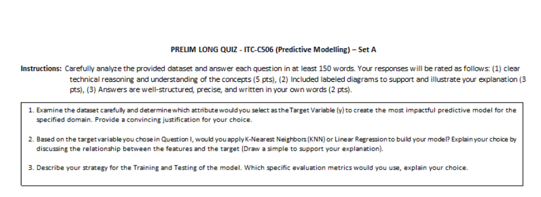
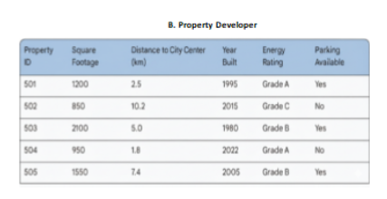
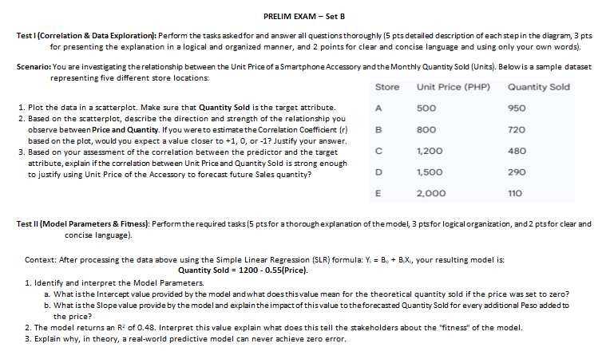
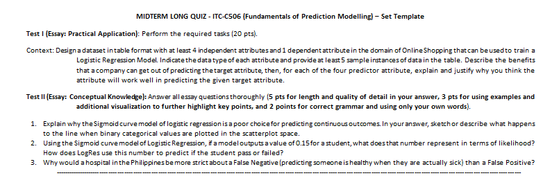

welcome to my it elective 3 e-portfolio.
This portfolio contains my journey in the subject of ITC-C506 IT ELECTIVE 3. It contains my About Me, An article about Predictive Modelling in Different Industries, Prelims Coursework, Midterms Coursework, and Finals Coursework.
[note: you can change to either dark mode or light mode]
Hi, I'm Perlin Precious S. Sasil. I was born on May 11, 2005. I was raised in Brgy Valenzuela, Makati City. Information Technology has been my passion since I was an elementary school student. I had been involved in programming when I competed in the Philippine National Robotics Olympiad in 4th grade.
I became fascinated with technology at the pandemic's peak as it was when I was more connected with my devices than the outside world. Technology has been part of our everyday lives and I wanna improve my knowledge about it more.
In my opinion, Information Technology will be more developed in the later years as it has become more and more competitive in the programming scene. Beyond the walls of our educational establishment, I have been more informed about the other limitations this course can bring.
In 2026, Predictive modelling had been a technique where we relay on historical data to create a prediction for future outcome. With the use of machine learning and different types of algorithms, business can easily analyze the patterns in their data to be able to make the possible decisions.
This type of modelling is frequently seen in different industries. Predictive modelling allows raw data to be transformed into something that can be used to predict the possible decisions for businesses to have a better performance outcome.
Having a proactive approach rather than having a reactive decision making approach, organizations that successfully apply these strategies can obtain a competitive advantage and eventually increase productivity and profitability. [1]
Research in BMC Health Services Research in 2025 examines an enormous paradigm shift in how they treat chronic conditions such as heart failure and diabetes.
By leveraging the information already present in the patient’s health record, predictive systems can identify which patients are at the greatest risk of a health crisis before anything occurs. [5]
According to the 2025 report by PrimePath Logistics, the world of packaging is witnessing a huge shift. The "Zero Waste" market will see more than double its business in the next decade. [6]
It’s not just about consuming less plastic. This is about being strategic in terms of supply chains and using predictive modeling to determine exactly how to distribute products.
Great teachers are always scanning the room—even when it’s virtual. They consider variables such as the location of their students and the tools available to them.
In doing so, teachers are able to dynamically adjust to create an experience that remains authentic and human. [7]
From all the information I've gathered, my expectations for this subject are to gain knowledge in statistical modeling, machine learning, and processing data in real-time from ITC-C506.
I hope to learn how to build and evaluate predictive models using appropriate algorithms, and how to validate models to ensure accuracy.
The prelim period was a mixture of both successes and challenges for me. Throughout the activities, quizzes, exams, and schoolworks, I realized that I was able to understand some of the core concepts in data analysis, correlation, regression, and predictive modeling, but I also became aware of the areas where I still need significant improvement. Overall, I think I performed fairly in the quizzes and exams, but I struggled more with the schoolworks because of mistakes in applying concepts and analyzing the requirements carefully. During the quizzes and exams, I believe I did okay because I was able to answer several questions correctly and show my understanding of the lessons. I could identify relationships between variables, interpret basic data trends, and explain some concepts in my own words. Even though I had difficulties in certain parts, such as interpreting regression parameters and answering some questions completely, I still managed to apply what I learned during discussions. The exams also taught me the importance of organizing answers clearly and understanding not only computations but also interpretations.
[insert content]
[insert content]
[insert content]
This activity challenged my understanding of predictive modeling, target variables, and machine learning methods. I was able to answer all the questions and explain my ideas in detail, which helped me practice organizing my thoughts and applying the concepts discussed in class. I also tried to justify my answers clearly by relating the attributes in the dataset to possible prediction models. However, while reviewing my answers, I realized that some of my choices were incorrect. I selected “Year Built” as the target attribute, but later understood that it was not the best choice for creating an impactful predictive model in the given scenario. A more appropriate target variable could have been something more directly connected to prediction outcomes, such as property value or another dependent factor. Because of this mistake, my explanations and reasoning became less accurate. I also chose K-Nearest Neighbors (KNN) as the model to use, but I later realized that my justification was weak because “Year Built” is a numeric variable. Linear Regression would have been a more suitable choice since it is commonly used for predicting continuous numerical values. Although KNN can still work with numeric data, it was not the best model for the situation compared to regression techniques. This made me realize that choosing the correct algorithm depends not only on the data type but also on the relationship between the variables and the prediction goal.


Taking this exam was both challenging and a learning experience for me. I think I did fairly okay in Test I because I was able to analyze the data, observe the relationship between Unit Price and Quantity Sold, and answer some of the questions about correlation and trends. I understood that as the price increased, the quantity sold decreased, which showed a negative relationship between the variables. I also tried my best to explain my observations clearly and organize my answers properly. However, I also made several mistakes during the exam. One thing I forgot to do was add labels to the graph, which is important because labels help make the scatterplot easier to understand and interpret. I realized that even small details like proper labeling matter in presenting data correctly.

In this exercise, I have learned that the study effectively balances technical execution with ethical responsibility. It highlights that while an algorithm like KNN can reach near-perfect accuracy on a standard dataset, its real-world application that is especially in government that requires more than just a high score; it requires human oversight to ensure transparency and fairness in automated decision-making.
Creating this IEEE paper about the k-Nearest Neighbor (k-NN) algorithm became both a learning experience and a realization of my weaknesses in technical writing and research presentation. While I was able to complete the paper and explain the general concepts of k-NN, I realized that I struggled in many aspects of making a proper IEEE-format research paper. One of the biggest challenges I faced was organizing my ideas academically. I understood the basic concepts of the Iris Dataset, machine learning, and k-NN classification, but translating those ideas into a formal and professional research structure was difficult for me. Some parts of the paper became repetitive, especially in the methodology section where I repeatedly explained the same concepts in different subsections. Because of this, the flow of the paper sometimes felt inconsistent and redundant instead of concise and technical as expected in IEEE writing. I also realized that my grammar, sentence construction, and technical wording were weak in several areas. Some explanations were unclear, overly long, or contained grammatical mistakes that reduced the professionalism of the paper. There were moments where I mixed informal explanations with technical discussions, making the writing less polished than a real academic journal article. I learned that IEEE papers require precision, clarity, and a more formal tone, which I still need to improve on significantly.
DID NOT SUBMIT
DID NOT SUBMIT

Creating my IEEE about Logistic Regression and construction safety prediction became a difficult but valuable learning experience for me. While I was able to create a working model and present performance metrics such as accuracy, recall, and confusion matrices, I realized that I struggled in properly presenting the report in an academic and professional manner. My paper was not fully IEEE compliant, and there were several issues with formatting, structure, grammar, and consistency throughout the report. Some explanations became repetitive, while other sections lacked deeper technical analysis and proper interpretation of the results. I also failed to include enough proper references and citations, which reduced the credibility and professionalism of the paper. Looking back, I understand that I focused too much on completing the output and obtaining good results instead of fully understanding the standards required in technical research writing. Another major weakness in my work was forgetting to add meaningful comments in the code. At the time, I only focused on making the program function correctly, but I now understand that code comments are important because they show proof of understanding and actual learning from the exercise. Without proper comments, my work lacked evidence that the explanations written in the report came from my real experience while building and testing the model. I also realized that I struggled in critically analyzing the behavior of the model since I mostly described the outputs instead of deeply explaining the reasoning behind the results and the limitations of the Logistic Regression model. Despite these weaknesses, this activity still helped me improve my understanding of preprocessing, feature selection, classification, and machine learning evaluation metrics. More importantly, it taught me that creating a proper research paper requires not only technical results, but also clear documentation, deeper analysis, proper formatting, and professional presentation.
this website was designed by perlin precious s. sasil.
thank you for visiting my portfolio website.